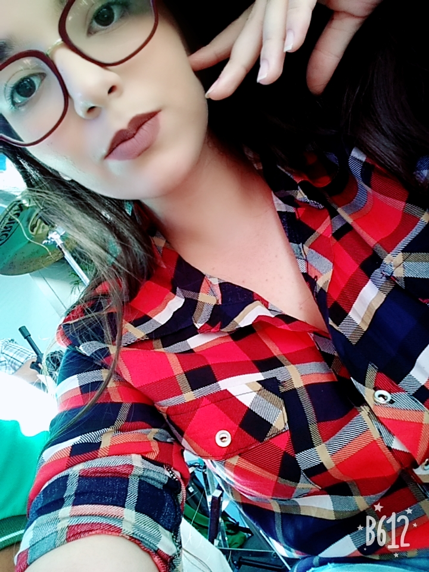
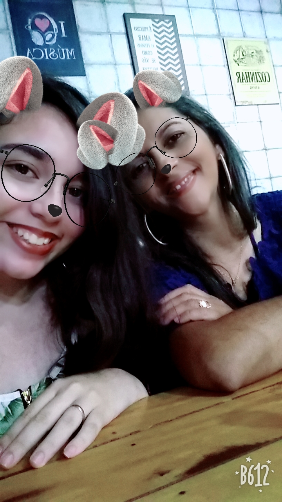

 Oi oi, essa sou eu! Meu nome é Nalanda Agnes, tenho 15 anos, moro atualmente em Picuí/PB, meu apelido é Nah, porém tenho amigos que me chamam de Naja (o que eu acho injusto, pois só sou um bebê).
Bom, não tenho muito o que falar sobre mim. Eu estudava no IFRN - Campus Currais Novos, porém quando estava no 2º ano do curso, decidi transferir para o IFPB - Campus Picuí. No início foi um pouco complicado, mas confeço que não me arrependo, o meu novo curso e o campus são maravilhosos. Acho que isso é o básico que posso falar sobre mim...
O meu pai,sem dúvida alguma, era uma pessoa maravilhosa. Ele era divertido, simpático, fazia os melhores bolos do mundo (e disso ninguém pode discordar). Eu sinto muita falta dele (o que já era de se esperar), e se eu conseguisse, voltaria no tempo só para conseguir aproveitar melhor da presença dele, os finais de semana dedicados para assistir filmes de ação... Bom, vou parar de falar por aqui para não começar a chorar, mas eu só queria mostrar o quanto ele foi e sempre será um pai incrível.
 Atualmente eu moro com essa mulher incrível que é a minha mãe. Eu não consigo nem explicar o quanto que ela é maravilhosa e guerreira, que sempre está tentando cumprir com o papel de "mãe" e "pai", e isso é uma das coisas que mais me fascina.
Aqui em Picuì, nós moramos perto da casa da minha avó, o que é fantástico porque eu sempre senti falta dela e agora posso visitála quando quiser.
E isso é tudo sobre a minha família e sobre uma parte da minha vida.